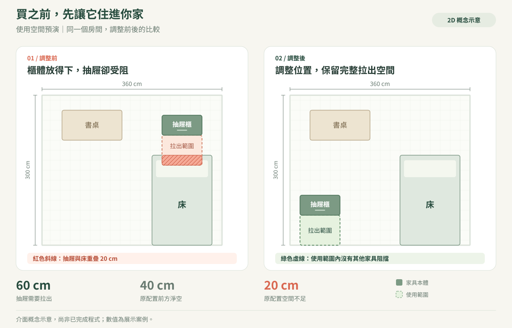
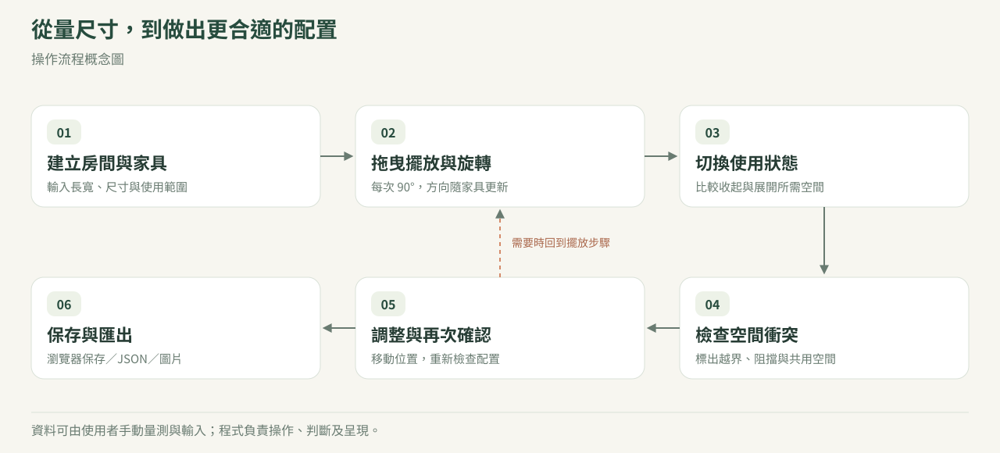
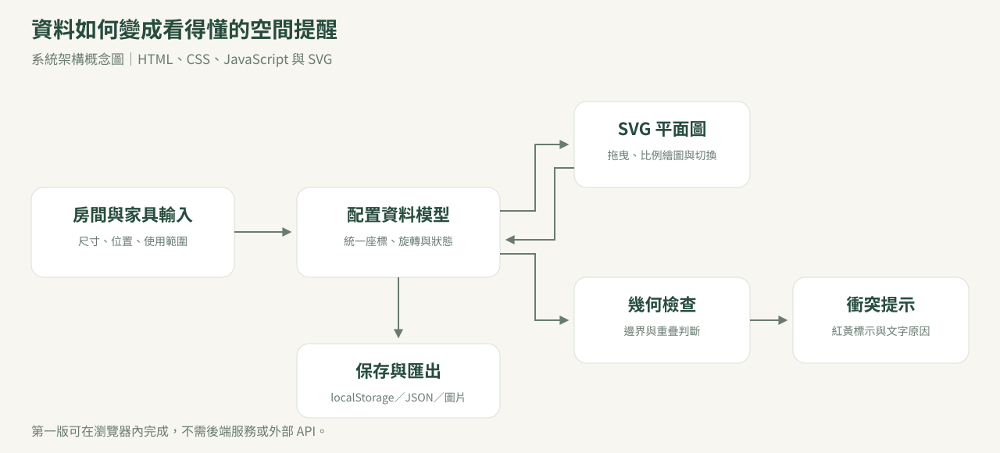

容易忽略的使用範圍
椅子需要向後拉、抽屜需要向前開。只確認家具本體能放入房間，仍可能忽略操作時的空間需求，造成買錯家具、退換貨或反覆搬動。
家具使用空間預演器
把椅子拉開、把抽屜打開。
在真正購買或搬動之前，先看見家具使用時需要的空間。
2D 平面配置 · 手動量測輸入 · 使用範圍檢查
固定案例的互動解說；不是已完成的家具配置程式。
買家具前量過尺寸，為什麼搬進來還是不好用？因為日常使用包含動作，而家具尺寸只描述了其中一部分。
椅子需要向後拉、抽屜需要向前開。只確認家具本體能放入房間，仍可能忽略操作時的空間需求，造成買錯家具、退換貨或反覆搬動。
本專案預計用簡單的 2D 房間圖，把家具本體與使用範圍分開呈現。使用者自行調整配置，系統即時指出衝突位置與原因，協助做出更合適的選擇。
一位學生想在床旁邊添購抽屜櫃。櫃體尺寸沒有問題，但打開抽屜時，前方的床成了阻擋。
讓問題先出現在畫面上，
而不是家具搬進家裡之後。

數值為展示案例。實際尺寸與操作空間由使用者量測輸入，不作為通用人體工學標準。
操作流程以手動輸入與直接調整為主，讓第一次使用的人也能理解每一個判斷從哪裡來。

第一版聚焦在矩形房間與基本家具，完成從配置、檢查到保存的完整流程。
輸入長寬，以公分建立矩形房間與座標。
先支援桌子、椅子、床與抽屜櫃，依商品規格調整尺寸。
移動、刪除與旋轉家具，使用方向隨本體一起更新。
顯示椅子後拉與抽屜展開的範圍，觀察空間變化。
標示相撞、受阻與越界的位置，顯示涉及哪些家具。
瀏覽器保存配置，以 JSON 備份分享，另可匯出圖片。
使用者輸入尺寸與配置資料，由 JavaScript 進行幾何檢查，再透過 SVG 畫面與文字說明呈現。

每件家具記錄名稱、寬深、位置、旋轉方向與相對使用範圍。第一版只允許 90 度旋轉，可透過矩形邊界比較判斷重疊；檢查時排除使用範圍所屬的家具本體，避免誤判。只有邊緣相接不算面積重疊，使用者仍可自行預留餘裕。
先以一個房間、一張床、一個抽屜櫃建立原型。資料可從量測與商品規格取得，第一版不需要外部 API 或後端服務。
放入互相重疊的家具，預期標紅並指出衝突對象。
以需要 60 cm、現有 40 cm 的固定案例，核對不足 20 cm 的提示。
移出房間邊界，預期顯示越界位置與原因。
本體未相撞時，預期以黃色提醒同時使用可能衝突。
解除衝突後，原本提示應同步更新或移除。
重新開啟或匯出再匯入後，尺寸、位置與設定應維持一致。
目前已通過幾何引擎單元測試與瀏覽器操作驗證。後續可搭配尺量測或等比例紙模型，繼續核對真實空間與輸入資料。
先完成核心流程，再評估更複雜的房間與動線需求。
完成房間尺寸、家具資料與等比例繪製。
加入拖曳、旋轉與使用範圍切換。
完成衝突提示、設定保存與匯出。
以固定案例及量測核對，整理前後比較。
後續可評估門片開啟、不規則房間與通行寬度。門片掃過區域與通道可達性需要額外的幾何或路徑判斷，不包含在第一版矩形檢查內。